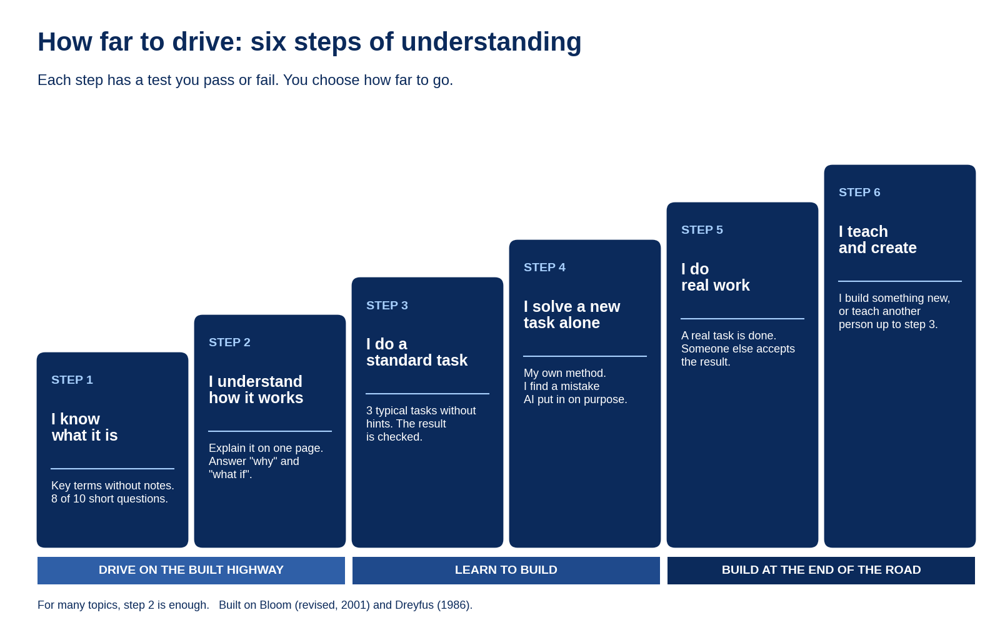

Today, while going through my email, I saw four more invitations to different courses.
It made me think about why adults go back to learning.
The certificate is part of the answer.
But I think there is a second reason, and it may be even more important.
Learning is like a trip on a highway
School and university are like a bus trip on a good highway.
You are not the driver.
It does not matter much while new views pass by the window every minute.
And then you start to work.
You get off the bus.
And no, you do not walk.
You build this road further yourself.
Each kilometer takes a lot of time.
New impressions no longer come in a flow.
Day after day, month after month, year after year, the view outside is the same.
But you see other highways.
They go in other directions, into the fog.
You want to know what is there.
Did you choose the right road?
Each of these highways leads somewhere, or people are still building it.
The unknown and the flow of new impressions call us.
This is what many of us miss after years of work.
Not the certificate, or not only the certificate.
We want new knowledge and new impressions.
So the question is not whether to learn again.
The question is where to go, and on what.
Where to go, each of us decides alone.
On what and how, take a close look at AI.
AI on this trip
AI is a universal tool for your trip.
Choosing a highway?
AI helps you build and tune your own navigator: an interactive map of the highways that interest you.
For example, a dashboard on your topic: current ideas and solutions, main trends and news.
An aggregator for a wide range of questions, in a visual form: interactive maps, histograms and charts.
Looking for something to drive?
With AI you build your own car: a course or a book made for you, with the comfort and features you need.
It goes as deep and into as much detail as you need.
If a part is unclear or hard, AI breaks down exactly that part, with pictures and animation, again and again, until you simply cannot fail to understand it.
Not keen to travel?
Then use AI to make a better tool for your work.
Replace the shovel with a bulldozer, and keep building your own highway.
Back to transport: the bus or a car?
I mean courses again.
Courses from others are buses.
Someone else set the route.
The stops are common, in places that do not interest you.
And the view where you wanted to stay longer flashes past the window.
A course or a book you make with AI is your own car.
It is interactive, comfortable and built for you.
Interactive means more than text: pictures, charts, animation, video.
You do not need to be a programmer to build one.
Try it yourself.
You choose the comfort and the stops.
You can build a course on any topic you like, at any depth.
From the simplest level, like for a school student, up to professional.
Now you choose the depth yourself.

Or the certificate you want sets the depth for you.
This is how I built my own car, when I started working with AI.
It is a book on how AI models work.
A book and a course in one.
It is interactive.
The AI highway grows at a fantastic speed.
So I update my car regularly to keep moving on it.
I am not the only one who sees this.
In a Harvard physics study published in 2025, students with a specially designed AI tutor had more than double the median learning gain of students in an active learning class.
They spent a median of 49 minutes against a 60 minute class.
When you still need the certificate
We have not forgotten the certificate.
Sometimes the certificate is the entry ticket.
About 22% of the EU workforce is in regulated professions, according to the European Commission.
A 2021 study by Harvard Business School and Accenture found that 88% of employers believe their hiring filters reject qualified high-skill candidates.
On this trip, the certificate is a checkpoint.
You stop, show what you know, and get the stamp.
Only now you drive there in your own car, at your own pace and in comfort.
And you stop there when you feel you are really ready.
AI is a tool in your hands.
As before, you choose the highway yourself.
What will happen to the buses now?